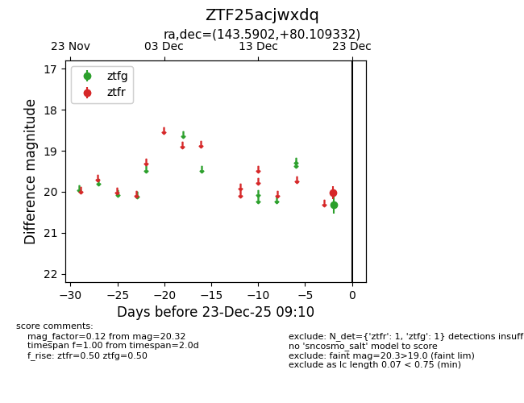
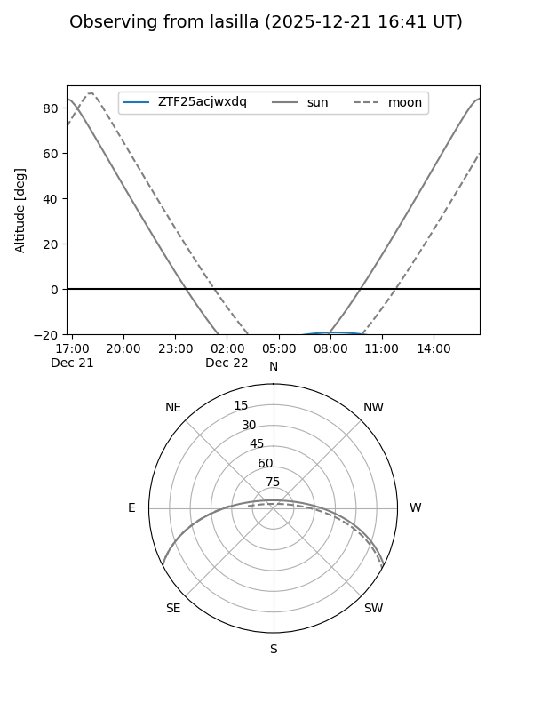
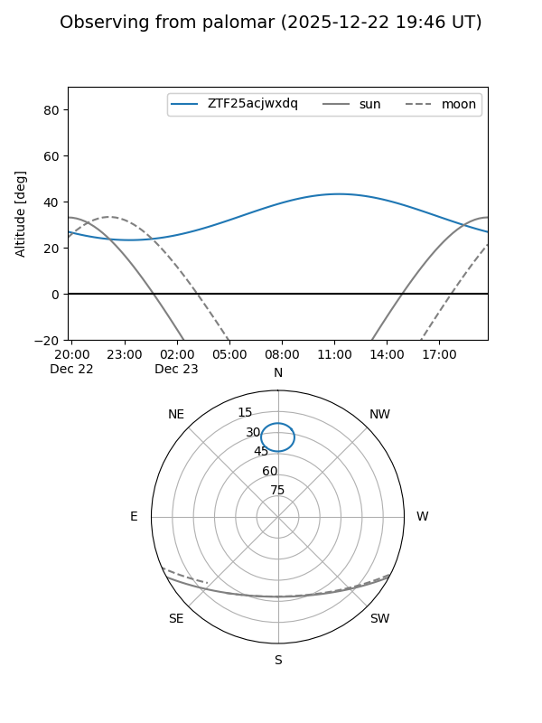

ZTF25acjwxdq
Target ZTF25acjwxdq at 2026-01-09 12:49
Aliases and brokers:
FINK: link
Lasair: link
ALeRCE: link
alt names
ZTF25acjwxdq (ztf,fink_ztf)
Coordinates:
equatorial (ra, dec) = 143.5902,+80.10933
equatorial (HMS+DMS) = 09:34:21.64,+80:06:33.59
galactic (l, b) = (131.8908,+33.29545)
Flags:
Photometry:
last ztfg=20.32, ztfr=20.02
1 ztfg, 1 ztfr detections
Lightcurve

Visibility


Additional plots